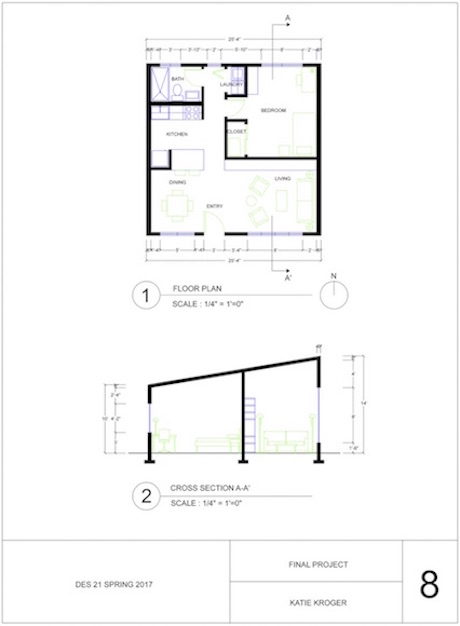

Architecture Work
Residential Measurement Based Floorplan
This project is a floorplan of my rental house in Davis. A challenge with creating the plan was measuring everything by hand then making sure it all matched up in AutoCAD and getting the wall thicknesses correct. I chose to show basic furniture in the house to give a sense of scale to the floorplan.
Student Housing Apartment Design
This project was to design a student-housing apartment for UC Davis. There were many constraints for the floorplan, mainly that it had to fit into a 24ft by 24ft square. To create a useable floor plan in such a small space, I started by addressing each constraint and fitting in each piece as I went. The biggest constraint was the layout of the bathroom and kitchen. They had to share a wall and be laid out exactly how I have them in the model. I chose to place the unit in the corner of my model to maximize the amount of space I had to work with for the rest of the rooms. To create a full kitchen, I created a zone with a wooden floor and added in the refrigerator and counter space. I was able to solve the problem not having a real kitchen in the unit, and too little space with this solution. The placement of this unit was able to guide how I laid out the rest of the floor plan in order to maximize the amount of space I had.
